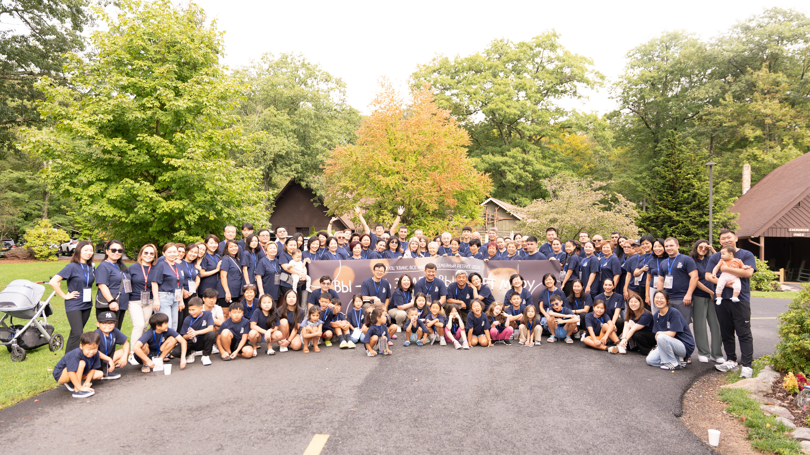
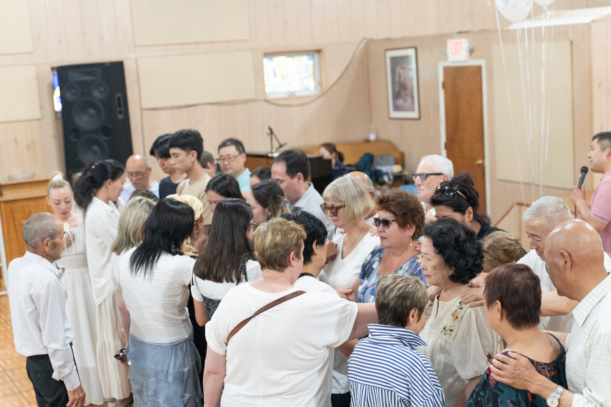

Воскресное Богослужение
Каждое воскресенье в 08:30
Мы собираемся вместе, чтобы поклоняться Богу через пение, молитву и изучение Его Слова. Наши двери открыты для каждого.

Воскресная Школа
Для детей 4-7 лет
Каждое воскресенье наши дети изучают библейские истории, делают поделки и познают Бога в игровой форме.

Домашние Ячейки
Еженедельные встречи
Мы собираемся по домам для более глубокого общения, изучения Библии и взаимной поддержки в малых группах.

Молодежное Служение
RMYG & RMYA
Молодежка собирается в 11:00 каждое воскресенье. Время для ученичества, общения и роста в вере.